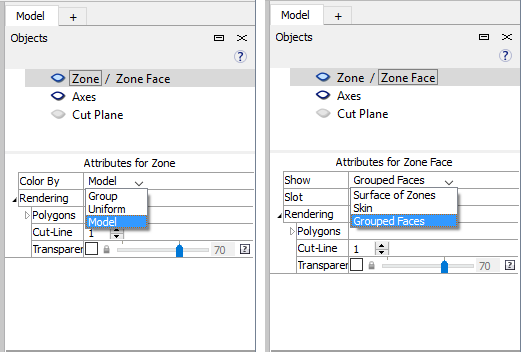
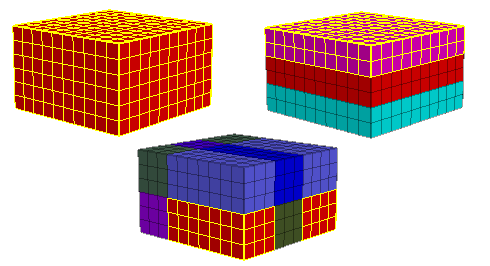
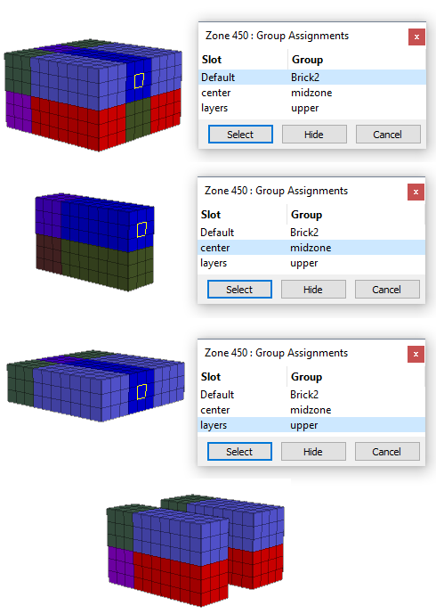
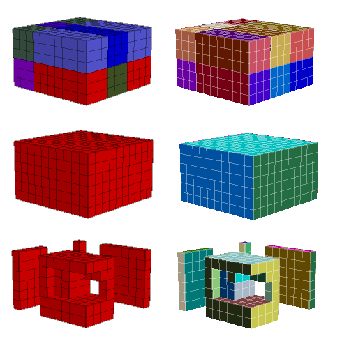
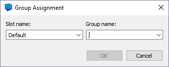
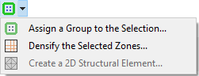

识别模型区域
创建网格后（见网格生成（Grid Generation）），用户面临的下一个问题，是如何识别模型中组成关注区域的网格单元和网格单元面。在复杂三维模型中，这可能特别棘手。事实上，过去人们认为创建数据文件十分困难，其中很大一部分难度，仅仅在于如何为给定命令指定所需网格单元或面。
其中一部分工作通常会在网格生成期间完成——所有内置网格生成方法都允许用户为区域命名，并将名称传递给区域内生成的网格单元。多数第三方工具也有类似功能，Griddle 同样如此。
即使已有这些标签，它们通常也是自动生成的，需要整理成与特定模型特征相关、易于识别的区域。例如，将施加边界条件的区域、创建接触面的区域、不同材料性质的区域，或需要开挖的区域。
FLAC3D 6 包含多项已有和新增功能，使识别模型区域以供后续引用比以往更容易。一旦完成这项工作，构建模型其余部分所需的命令往往变得十分简单。本节介绍其中一些功能。
分组与槽位
在 FLAC3D 中，识别对象（网格单元、结构单元、裂缝、几何多边形等）的主要方式是分组和槽位。这两个术语来自历史沿用，可能并不直观。可以把对象（如网格单元）想象为表面具有多个可贴标签的位置。每个位置只能贴一个标签，但对象可以有多个位置，各自容纳不同标签。在 FLAC3D 中，标签就是分组名，位置就是槽位。可以指定任意数量的分组名，一个模型最多可使用 128 个不同槽位名称。
请回顾，范围（Range）是命令识别应操作哪些特定对象的主要方式。范围分组（range group） 是 FLAC3D 中最常用的范围元素。它检查该元素描述的给定分组和槽位，是否与赋予对象的分组名及槽位集合匹配。
为对象赋予分组名但不指定槽位名时，槽位名设为 默认（Default）。有关分组功能用法的更多信息，见分组（Groups）。许多情况下，不必指定槽位、直接使用分组可能更简单、高效或方便。但用户应始终记住，在给定槽位（包括 默认（Default） 槽位）内，后续分组赋值将覆盖先前赋值。明确使用槽位是避免潜在冲突的最简单方式。
为对象赋予分组名的主要方法，是在表示对象的名词后使用 group 关键字。例如，使用 zone group 赋予网格单元分组名，使用 zone face group 赋予网格单元面分组名，使用 锚索单元分组（structure cable group） 赋予锚索单元分组名。以下示例为所有形心位于 0 至 1 之间的网格单元赋予分组名 Fred（人名）（Fred）。
zone group 'Fred' range position-x 0 1
使用分组和槽位时，可通过两种方式在命令行中指定。一种是明确使用 group 和 slot 关键字。另一种是在 group 关键字后，使用 槽位名=分组名（slotname=groupname） 语法结构，将槽位和分组按此顺序组合。请看以下示例。
zone group 'mohr' slot 'models'
zone group 'models=mohr'
; 以上两种组分配方式等效
zone cmodel assign elastic range group 'mohr' slot 'models'
zone cmodel assign elastic range group 'models=mohr'
; 以上两个使用 "models" 槽中 "mohr" 组的范围相同
从上述片段可以看出，槽位的一种有用用途，是创建具有明确含义名称的分组分类——可以在此基础上创建名为 开挖序列（excavation_sequence）、材料类型（material_type）、裂隙分组（fracture_groups） 等槽位。常见做法是用一个槽位区分将被赋予不同本构模型和性质的材料，再用另一个槽位标记按特定顺序开挖的区域。模型窗格（Model Pane）尤其适合此用途。
使用分组范围元素
简单的分组范围元素
以下示例展示分组范围元素最常见、最简单的用法：选择与简单分组名匹配的对象。
zone property bulk 3e8 range group 'Fred'
该命令为所有匹配分组名 Fred（人名）（Fred） 的网格单元赋予体积模量性质。不指定槽位意味着 FLAC3D 会检查赋予网格单元的所有槽位中是否存在 Fred（人名）（Fred）。即使使用多个槽位，每个分组名仅用于单个槽位的做法也很常见。
一个元素中使用多个分组
可以在单个范围元素中指定多个分组名。以下命令
zone property bulk 3e8 range group 'Fred' or 'George'
将选择赋予了 Fred（人名）（Fred） 或 George（人名）（George） 任一分组名的网格单元。如果使用“slotname=groupname”语法，可要求 Fred（人名）（Fred） 和 George（人名）（George） 出现在不同指定槽位中。
相连接的对象
检查对象是否被赋予分组名时，通常会沿现有对象层级检查。例如，网格点与网格单元面相连，网格单元面又与网格单元相连。在网格点上检查分组名，会自动检查该名称是否被赋予与该网格点连接的任意网格单元面，或与该网格点连接的任意网格单元。以下示例为单个网格单元赋予分组名 一（One），然后初始化与该网格单元连接的所有网格点的速度。
zone group 'One' range id 1 zone gridpoint initialize velocity-x 1 range group 'One'
网格单元分组之间的面
可以利用对象层级，结合多个范围元素，选择位于两个分组之间的网格单元面。例如，
zone separate by-face range group 'Fred' group 'George'
将选择位于 Fred（人名）（Fred） 组网格单元与 George（人名）（George） 组网格单元边界上的网格单元面。请回顾，默认情况下，范围为其所有范围元素的交集。这意味着选定面必须同时属于 Fred（人名）（Fred） 组和 George（人名）（George） 组。由于这些分组名仅在单个槽位中赋予网格单元，因此该面的一侧必须连接 Fred（人名）（Fred） 组的网格单元，另一侧连接 George（人名）（George） 组的网格单元。
有关分组范围元素可用选项的完整文档，见 范围分组（range group）。
选择与隐藏
选择和隐藏都是 FLAC3D 6.0 中的新概念。在模型窗格（Model Pane）中，其含义与直觉相符：隐藏使对象（例如网格单元）不在视图中显示，从而可以看到并操作原本被遮挡的其他网格单元；选择则确定后续操作将作用于哪些具体网格单元。
但它们并不仅是可视化和交互概念。对象的隐藏和选择状态通过命令行改变，并属于命令记录的一部分。受对象隐藏或选择状态影响，或依赖这些状态的操作，均可像其他操作一样，使用手动写入数据文件的命令完成。
理解设置和清除这些状态对后续命令可能产生的附带影响十分重要。
hide 关键字
许多对象提供 hide 命令，可用于设置和取消对象的隐藏状态。对象的隐藏状态是该对象的持久属性，随模型保存文件一同保存和恢复。例如，可使用以下命令隐藏网格单元：
zone hide range group 'Fred'
可通过以下命令使同一分组可见（取消隐藏）：
zone hide off range group 'Fred'
对象隐藏后，即使后续使用其他命令隐藏别的对象，它们仍保持隐藏。
重要：隐藏的效果相当于将隐藏对象从模型中“暂时排除”。接受 范围（range） 关键字的命令会自动跳过隐藏对象，即使没有指定范围。因此，除使用 范围（range）、分组和选择外，隐藏也是对部分对象集合而非完整集合进行操作的一种方法。可以在范围短语中使用 use-hidden 关键字，抑制此行为，即使对象隐藏也将其选中。
注意
由于隐藏状态是全局且持久的，会影响发出的任何命令，因此使用模型窗格（Model Pane）时必须十分小心。完成操作后，应确保恢复所有隐藏对象，否则后续命令可能无法作用于预期对象。
zone hide range group 'Fred'
zone cmodel assign mohr-coulomb
zone hide off
上述示例将 Mohr-Coulomb 本构模型赋予所有网格单元，但不包括分组名为 Fred（人名）（Fred） 的网格单元，因为在发出命令之前它们已被隐藏。
如果使用隐藏命令，建议（例如）发出 zone hide 关闭（off） 命令，确保所有网格单元可见后再继续。
select 关键字
通常，可隐藏的任何对象也会提供 select 命令词。该命令用于选择（默认）或取消选择（在命令中将可选标志设为 关闭（off））命令所给 范围（range） 范围内的对象。对象将一直保持选中，直到取消选择。存在选择集时，对同类对象执行附加选择命令，会将其添加到当前选中对象集合。对于每种对象类型，同一时间只能存在一个选择集，但多种不同对象类型可以各自具有当前选择集。
selected 范围元素
如果某种对象类型存在当前选择集，可在 范围（range） 中使用 selected 关键字将其作为对象引用。
zone select range group 'Fred'
zone cmodel assign mohr-coulomb range selected
zone select off
上述命令选择分组名为 Fred（人名）（Fred） 的网格单元，在 范围（range） 中使用该选择集赋予 mohr-coulomb 本构模型，然后取消选择这些网格单元。
还有 deselected 范围关键字，可按相同方式使用；顾名思义，它仅选择当前未选中的对象。
其他注意事项
选中的对象不能隐藏。如果尝试隐藏的对象集合与当前同类选中对象集合部分重叠，将成功隐藏其中未选中的对象，而选中对象不受影响。
用户还应注意，对于选择操作，模型窗格交互工具的行为与命令中的行为不完全相同。在模型窗格中用工具选择对象时，选中一个当前未选中的对象，会使当前选择集被取消。这与 select 命令词的行为不同；后者将新选中的对象添加到当前选择集。对于命令，可以为 select 命令添加 new 关键字，使其行为与交互工具一致（选中新对象并取消当前选择）。反过来，使用交互工具时同时按住 Ctrl 键，可使其以添加方式选择。
使用模型窗格
模型窗格（Model Pane）提供交互功能，用于显示和选择模型对象。随后可直接将选定对象集合作为命令目标（见selected 范围元素（the selected Range Element）），或者按需要将其“存储”为分组。
i 模型（Model）窗格中的操作会生成为命令。这些命令在 i 控制台（Console）窗格中回显，并记录在状态记录窗格（State Record Pane）中。用户应留意是否需要保存 i 模型（Model）窗格中发出的命令，以便以后用于数据文件。如果有此需要，可使用状态记录窗格（State Record Pane），将自上次重置模型状态后，在 i 模型（Model）窗格会话中（或任何其他位置）发出的所有命令导出到数据文件。
i 模型（Model）窗格所提供工具的用法，在本文档的 i 模型（Model）窗格一节中有详细说明。以下内容概述可用操作类型。
模型窗格中的对象
在 6.0 版中，模型窗格可显示的对象仅限于网格单元或网格单元面。请注意，模型视图只显示网格单元或网格单元面，不能同时显示两者。后续版本将加入其他对象，供在窗格中显示和选择，例如结构单元、几何数据、用户自定义数据等。
显示对象
窗格中对象的外观由控制面板（Control Panel）中的“对象”控件组控制。如下面所述，显示方式又决定哪些对象可选、哪些不可选。模型窗格中的显示方式与绘图（Plot）窗格相近，但存在一些区别：1）向模型添加对象时，模型窗格的对象列表会自动填充（用户无需指定显示哪些对象）；2）用于修改渲染效果的属性较少，重点是区分不同的可选区域。

图 1：左：“网格单元”对象处于激活状态，“属性”部分显示其渲染选项；右：“网格单元面”对象处于激活状态，并显示其渲染选项。单击标签可在两者之间切换。
显示／隐藏工具（“隐藏”“仅显示选中对象”“隐藏选择集”“全部显示”）便于切入模型以访问内部空间，或将模型缩减为确切的关注区域。此外，还可应用“范围”元素。其工作方式类似于视图窗格绘图所用的“范围”元素。一个显著区别是，模型窗格中的范围元素不能组合使用，必须一次指定一个元素。
隐藏与选择的比较
界面有一条不言自明但重要的规则：对象只有可见时才能被选择。显示“网格单元”时无法选择“网格单元面”；“着色依据”属性设为“网格单元分组”时，无法按本构模型赋值选择，依此类推。该规则适用于窗格中的所有工具。例如，整个模型可见时，自动为面赋予分组名工具可以快速返回构成模型外边界的这组面上已赋的分组名。但如果通过范围元素等方法，将模型缩减为少得多的可见网格单元，自动为面赋予分组名工具会以完全相同的方式作用于这些网格单元（如下图所示）。
选择
通过模型窗格工具栏提供的工具执行选择。请注意，所提供工具与当前显示／选择的对象类型（网格单元或网格单元面）相关。另请注意，下文只介绍基本操作；可使用键盘修饰键改变或扩展工具行为。详细用法见模型窗格（The Model Pane）一节。
基本选择工具（ ）将选择所有颜色相同的网格单元或网格单元面，其颜色由“对象”控件组的“着色依据”属性决定。
）将选择所有颜色相同的网格单元或网格单元面，其颜色由“对象”控件组的“着色依据”属性决定。

图 2：按颜色简单选择。左：着色依据 > 统一——选中所有网格单元。中：着色依据 > 分组——选中被点取分组内的网格单元（它们无需相邻）。右：着色依据 > 模型——选中本构模型赋值相同的网格单元。选择始终以黄色高亮显示。
消歧工具（ ）显示鼠标下对象所属的所有分组列表。将“着色依据”设为“分组”通常是选择对象的最简单方式，但在某个网格单元（或网格单元面）具有众多重叠分组赋值的模型中，可能难以“找到”希望选择的分组。该工具可在此时提供帮助。
）显示鼠标下对象所属的所有分组列表。将“着色依据”设为“分组”通常是选择对象的最简单方式，但在某个网格单元（或网格单元面）具有众多重叠分组赋值的模型中，可能难以“找到”希望选择的分组。该工具可在此时提供帮助。

图 3：消歧工具显示高亮网格单元所属的三个分组。在“center=midzone”分组高亮时单击“隐藏”按钮，结果将如下方最后一图所示。
显示“网格单元”时，可用自动为面赋予分组名工具（ ），根据转折角将可见网格单元的“外皮”划分为面分组。由转折角（即相邻面之间的夹角小于转折角）及当前“着色依据”设置共同确定边界，在这些边界处将模型划分为外部（也可包括内部）面分组。
），根据转折角将可见网格单元的“外皮”划分为面分组。由转折角（即相邻面之间的夹角小于转折角）及当前“着色依据”设置共同确定边界，在这些边界处将模型划分为外部（也可包括内部）面分组。

图 4：同一操作（自动为面赋予分组名）的三种方式。上：模型按分组着色，右侧显示生成的面分组。中：模型统一着色（“统一”），右侧显示生成的面分组。下：模型统一着色，并使用范围及其他工具切去部分网格单元，生成右侧所示面分组。
显示“网格单元面”时，可用按转折角选择工具（）将相邻面一次选中（也提供按转折角隐藏工具（））。
选择与隐藏的比较
模型窗格的另一项界面规则是：选中对象不能隐藏（这与隐藏对象不能被选中的规则相对应）。尝试对选中对象使用隐藏工具会失败（信息对话框会提示）。唯一例外是隐藏选择集工具（），按下后会隐藏当前所有选中对象，并取消其选择。
分组
工具栏上的为选择集指定分组…命令（ ）可将当前选择集创建为分组。按下后会打开对话框，可指定分组名，并可选指定槽位（分组和槽位的说明见分组与槽位（Groups and Slots）和分组（Groups））。
）可将当前选择集创建为分组。按下后会打开对话框，可指定分组名，并可选指定槽位（分组和槽位的说明见分组与槽位（Groups and Slots）和分组（Groups））。

图 5：使用“为选择集指定分组…”命令时打开的对话框。
其他命令
当前显示对象为“网格单元”时，命令按钮菜单（）提供加密选定网格单元命令。显示网格单元面时，则提供创建二维结构单元命令（）。

图 6：模型窗格中可用命令的菜单（当前显示对象为网格单元）。
| 这些内容对您有帮助吗？… 版权与免责声明 | FLAC3D © 2019, Itasca | 原文更新于 2020 年 10 月 8 日 |